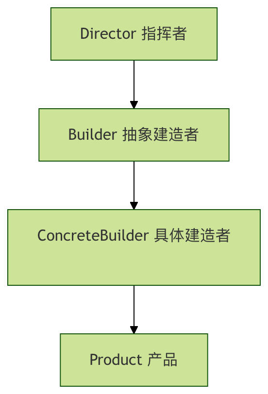

Python ビルダーパターン
ビルダーパターンを使用すると、同じ構築プロセスで異なるオブジェクト表現を作成できます。家を建てるプロセスを想像してみてください。邸宅でもアパートでも、基礎工事、壁の構築、電気設備や水道の設置などの手順が必要ですが、最終的な結果はまったく異なります。
中核となる考え方
ビルダーパターンは、複雑なオブジェクトの構築プロセスをその表現から分離し、同じ構築プロセスで異なる表現を作成できるようにします。このパターンは、複数の構成要素を含む複雑なオブジェクトの作成に特に適しています。
なぜビルダーパターンが必要なのか？
従来の構築方法の問題点
まず、ビルダーパターンを使用しない例を見てみましょう。
例
def __init__(self, cpu, memory, storage, graphics_card, monitor):
self.cpu = cpu
self.memory = memory
self.storage = storage
self.graphics_card = graphics_card
self.monitor = monitor
def __str__(self):
return f"Computer: CPU={self.cpu}, Memory={self.memory}GB, Storage={self.storage}GB, Graphics={self.graphics_card}, Monitor={self.monitor}"
# コンピューターオブジェクトを作成
computer = Computer("Intel i7", 16, 512, "NVIDIA RTX 3060", "27インチ 4K")
print(computer)
この方法の欠点：
- コンストラクタのパラメータが多すぎて、保守が難しい
- すべてのパラメータの順序を覚えておく必要がある
- 作成プロセスが十分に柔軟でない
- コードの可読性が低い
ビルダーパターンの構成要素
ビルダーパターンには4つの主要な役割があります：

1. Product（製品）
作成する複雑なオブジェクト
2. Builder（抽象ビルダー）
製品の各部分を作成するための抽象インターフェースを定義します
3. ConcreteBuilder（具体ビルダー）
Builderインターフェースを実装し、各部品を構築・組み立てます
4. Director（指揮者）
Builderインターフェースを使用してオブジェクトを構築します
完全なコード実装
コンピューター構成の例を使ってビルダーパターンを完全に実装してみましょう。
1. 製品クラス（Product）
例
"""コンピューター製品クラス"""
def __init__(self):
self.cpu = None
self.memory = None
self.storage = None
self.graphics_card = None
self.monitor = None
def __str__(self):
specs = []
if self.cpu:
specs.append(f"CPU: {self.cpu}")
if self.memory:
specs.append(f"メモリ: {self.memory}GB")
if self.storage:
specs.append(f"ストレージ: {self.storage}GB")
if self.graphics_card:
specs.append(f"グラフィックカード: {self.graphics_card}")
if self.monitor:
specs.append(f"モニター: {self.monitor}")
return "コンピューター構成:\n" + "\n".join(f" - {spec}" for spec in specs)
2. 抽象ビルダー（Builder）
例
class ComputerBuilder(ABC):
"""コンピュータービルダー抽象クラス"""
def __init__(self):
self.computer = Computer()
@abstractmethod
def build_cpu(self):
pass
@abstractmethod
def build_memory(self):
pass
@abstractmethod
def build_storage(self):
pass
@abstractmethod
def build_graphics_card(self):
pass
@abstractmethod
def build_monitor(self):
pass
def get_computer(self):
return self.computer
3. 具体ビルダー（ConcreteBuilder）
例
"""ゲーム用コンピュータービルダー"""
def build_cpu(self):
self.computer.cpu = "Intel i9-13900K"
def build_memory(self):
self.computer.memory = 32
def build_storage(self):
self.computer.storage = 2000 # 2TB
def build_graphics_card(self):
self.computer.graphics_card = "NVIDIA RTX 4090"
def build_monitor(self):
self.computer.monitor = "32インチ 4K 144Hz"
class OfficeComputerBuilder(ComputerBuilder):
"""オフィス用コンピュータービルダー"""
def build_cpu(self):
self.computer.cpu = "Intel i5-13400"
def build_memory(self):
self.computer.memory = 16
def build_storage(self):
self.computer.storage = 512
def build_graphics_card(self):
self.computer.graphics_card = "統合グラフィックス"
def build_monitor(self):
self.computer.monitor = "24インチ 1080P"
4. 指揮者（Director）
例
"""コンピューター構築指揮者"""
def __init__(self, builder):
self.builder = builder
def construct_computer(self):
"""コンピューターを構築する完全なプロセス"""
self.builder.build_cpu()
self.builder.build_memory()
self.builder.build_storage()
self.builder.build_graphics_card()
self.builder.build_monitor()
def get_computer(self):
return self.builder.get_computer()
使用例
では、ビルダーパターンを使用してさまざまな種類のコンピューターを作成する方法を見てみましょう。
例
print("=== ビルダーパターンデモ ===\n")
# ゲーム用コンピューターを作成
print("1. ゲーム用コンピューターを構築:")
gaming_builder = GamingComputerBuilder()
director = ComputerDirector(gaming_builder)
director.construct_computer()
gaming_computer = director.get_computer()
print(gaming_computer)
print("\n" + "="*50 + "\n")
# オフィス用コンピューターを作成
print("2. オフィス用コンピューターを構築:")
office_builder = OfficeComputerBuilder()
director = ComputerDirector(office_builder)
director.construct_computer()
office_computer = director.get_computer()
print(office_computer)
print("\n" + "="*50 + "\n")
# カスタムコンピューターを作成
print("3. カスタムコンピューターの構築:")
custom_builder = CustomComputerBuilder()
custom_builder.build_cpu("AMD Ryzen 7 7800X3D")
custom_builder.build_memory(64)
custom_builder.build_storage(4000)
custom_builder.build_graphics_card("AMD RX 7900 XTX")
custom_builder.build_monitor("34インチ曲面ウルトラワイドモニター")
custom_computer = custom_builder.get_computer()
print(custom_computer)
# カスタムビルダー（オプションステップ構築）
class CustomComputerBuilder:
"""カスタムコンピュータービルダー"""
def __init__(self):
self.computer = Computer()
def build_cpu(self, cpu):
self.computer.cpu = cpu
return self # 自身を返し、チェーン呼び出しをサポート
def build_memory(self, memory):
self.computer.memory = memory
return self
def build_storage(self, storage):
self.computer.storage = storage
return self
def build_graphics_card(self, graphics_card):
self.computer.graphics_card = graphics_card
return self
def build_monitor(self, monitor):
self.computer.monitor = monitor
return self
def get_computer(self):
return self.computer
if __name__ == "__main__":
main()
ビルダーパターンの変種
1. フルエントインターフェースビルダー
例
def __init__(self):
self.size = None
self.cheese = False
self.pepperoni = False
self.mushrooms = False
def __str__(self):
ingredients = []
if self.cheese: ingredients.append("チーズ")
if self.pepperoni: ingredients.append("イタリアンソーセージ")
if self.mushrooms: ingredients.append("マッシュルーム")
return f"{self.size}インチピザ、トッピング: {', '.join(ingredients)}"
class PizzaBuilder:
def __init__(self, size):
self.pizza = Pizza()
self.pizza.size = size
def add_cheese(self):
self.pizza.cheese = True
return self
def add_pepperoni(self):
self.pizza.pepperoni = True
return self
def add_mushrooms(self):
self.pizza.mushrooms = True
return self
def build(self):
return self.pizza
# ストリームインターフェースを使用
pizza = (PizzaBuilder(12)
.add_cheese()
.add_pepperoni()
.add_mushrooms()
.build())
print(pizza)
ビルダーパターンの長所と短所
長所
| 長所 | 説明 |
|---|---|
| カプセル化が良い | 構築プロセスと表現が分離されており、クライアントは内部の詳細を知る必要がない |
| 拡張性が高い | 新しい具体ビルダーを簡単に追加できる |
| より良い制御 | 構築プロセスをより細かく制御できる |
| コードの可読性 | チェーン呼び出しを使用するとコードがより明確になる |
短所
| 短所 | 説明 |
|---|---|
| 複雑性が増す | 複数のクラスを定義する必要があり、システムの複雑性が増す |
| 製品の差異が大きい場合は適用できない | 製品間の差異が大きい場合、ビルダーパターンはあまり適していない |
| ビルダーは製品に依存する | ビルダーは製品の具体的な詳細を把握する必要がある |
適用シーン
ビルダーパターンの使用に適した状況：
- 複雑なオブジェクトの作成：複数の構成要素を含む複雑なオブジェクトを作成する必要がある
- 構築プロセスが安定している：オブジェクトの構築プロセスは比較的安定しているが、オブジェクトの構成要素は頻繁に変化する
- 複数の表現：作成するオブジェクトに複数の異なる表現が必要
- テレスコーピングコンストラクタを避ける：複数のパラメータを含むコンストラクタの使用を避ける
実際の応用例：
- ドキュメントコンバーター：ドキュメントをPDF、Word、HTMLなどのさまざまな形式に変換する
- 食事メニューの作成：さまざまなセットメニューを作成する（ハンバーガー、フライドポテト、飲み物の組み合わせ）
- UIコンポーネントの構築：複雑なユーザーインターフェースコンポーネントを構築する
- レポート生成：異なる部分（ヘッダー、データ、グラフ）を含むレポートを生成する
実践演習
演習1：自動車ビルダーの実装
自動車ビルダーパターンを実装してみましょう。以下のコンポーネントを含みます：
- エンジン（ガソリン、電気、ハイブリッド）
- ボディカラー（赤、青、黒、白）
- ホイールサイズ（16インチ、18インチ、20インチ）
- 内装（本革、ファブリック）
演習2：コンピュータービルダーの改良
コンピュータービルダーに以下の機能を追加します：
- オプションコンポーネント（光ドライブを取り付けるかどうかなど）
- 検証ロジック（例：メモリは4GB未満は不可）
- 価格計算機能
まとめ
ビルダーパターンは強力な作成型デザインパターンであり、複雑なオブジェクトの構築プロセスを複数の単純なステップに分解することで、作成プロセスをより柔軟で制御しやすくします。システムの複雑性は増しますが、複雑なオブジェクトを作成する必要があり、構築プロセスが比較的固定されているシナリオでは、ビルダーパターンはコードの保守性と拡張性を大幅に向上させることができます。
デザインパターンの中核となる考え方を覚えておいてください：パターンを使用するために使用するのではなく、特定の設計問題を解決するために使用する。実際の開発では、具体的なニーズに応じてビルダーパターンを使用するかどうかを決定する必要があります。
その他の拡張
クリックしてノートを共有
ノートはこの記事の内容を拡張したものである必要があります！
記事投稿は、こちらをクリックしてください
登録招待コードの取得方法
ノートを共有する前にログインが必要です！
登録招待コードの取得方法